☕ 喫茶大和(きっさ やまと)
コーヒーのいい香りとレトロな音楽が迎えてくれるお店です。マスターが一杯ずつ淹れる サイフォンコーヒーと、手作りケーキが人気です。日替わりケーキがおすすめです。
| 所在地 | ピコぬ市記録町3丁目(商店街の中央) |
|---|---|
| 電話 | ぬぬ-ぬかピコ-8010 |
| 営業時間 | 9:00〜18:00 |
| 定休日 | 木曜日 |
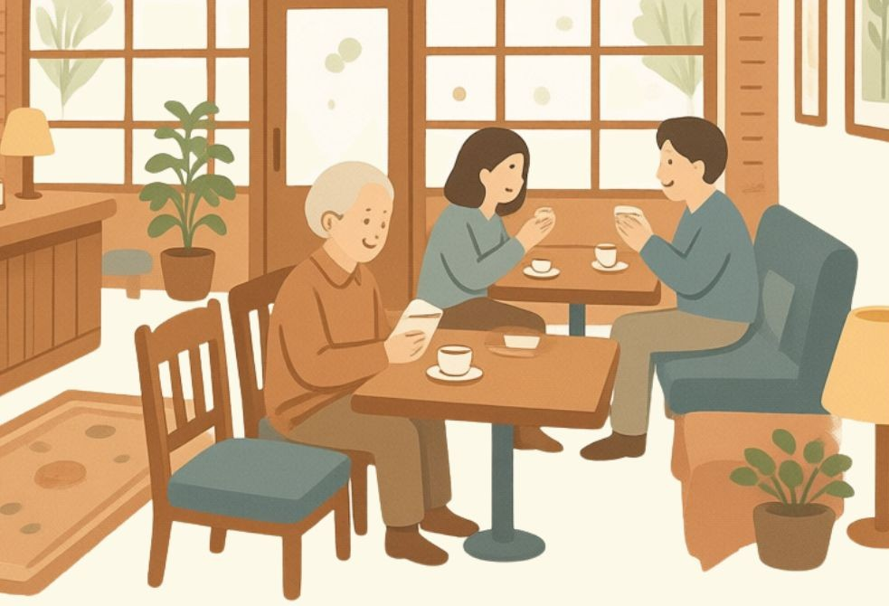
ピコぬ市商工会・商店街情報
ピコぬ市商工会に加盟しているお店をご紹介します。
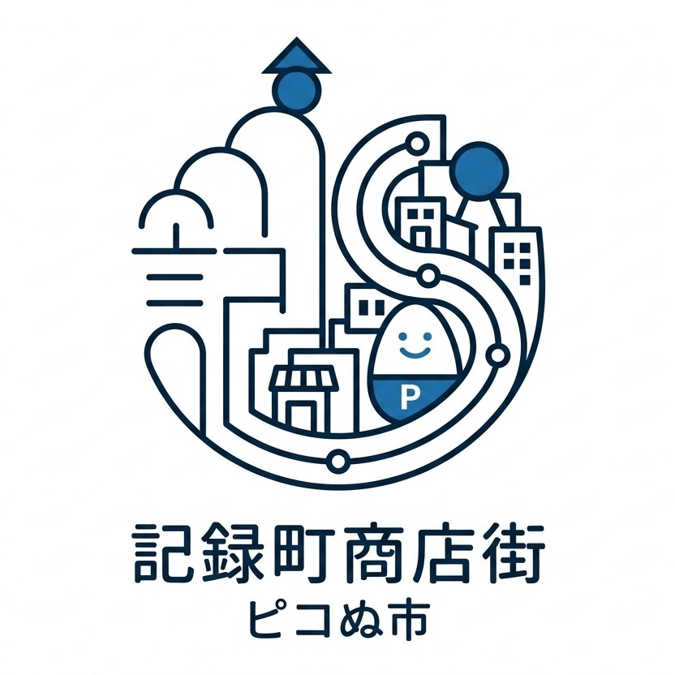
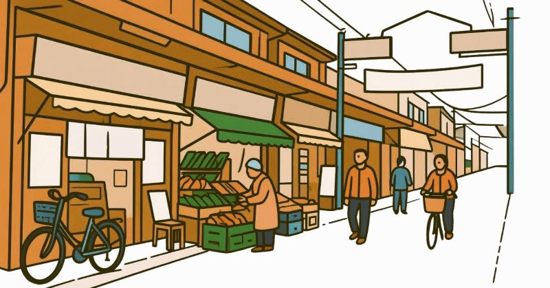

記録町商店街は、ピコぬ市の市民生活を支える小さな商店街です。
喫茶店、八百屋、文房具店、和菓子店など、日々の暮らしに関わるお店が並んでいます。 大きな観光地ではありませんが、歩いてみると、それぞれのお店にそれぞれの記録があります。
詳しくは商店街だより vol.1(PDF)もあわせてご覧ください。
記録町商店街の加盟店をご紹介します。 営業時間や定休日は変更される場合がありますので、 ご利用の際は各店舗へご確認ください。
コーヒーのいい香りとレトロな音楽が迎えてくれるお店です。マスターが一杯ずつ淹れる サイフォンコーヒーと、手作りケーキが人気です。日替わりケーキがおすすめです。
| 所在地 | ピコぬ市記録町3丁目(商店街の中央) |
|---|---|
| 電話 | ぬぬ-ぬかピコ-8010 |
| 営業時間 | 9:00〜18:00 |
| 定休日 | 木曜日 |

いつも元気な声が響く八百屋さんです。ピコぬ市で採れた新鮮な野菜や果物が 店先に並びます。夕方はお買い得なセールがあることもあります。
| 所在地 | ピコぬ市記録町3丁目(商店街の入り口近く) |
|---|---|
| 電話 | ぬぬ-ぬかピコ-8088 |
| 営業時間 | 8:00〜19:00 |
| 定休日 | 日曜日・祝日 |
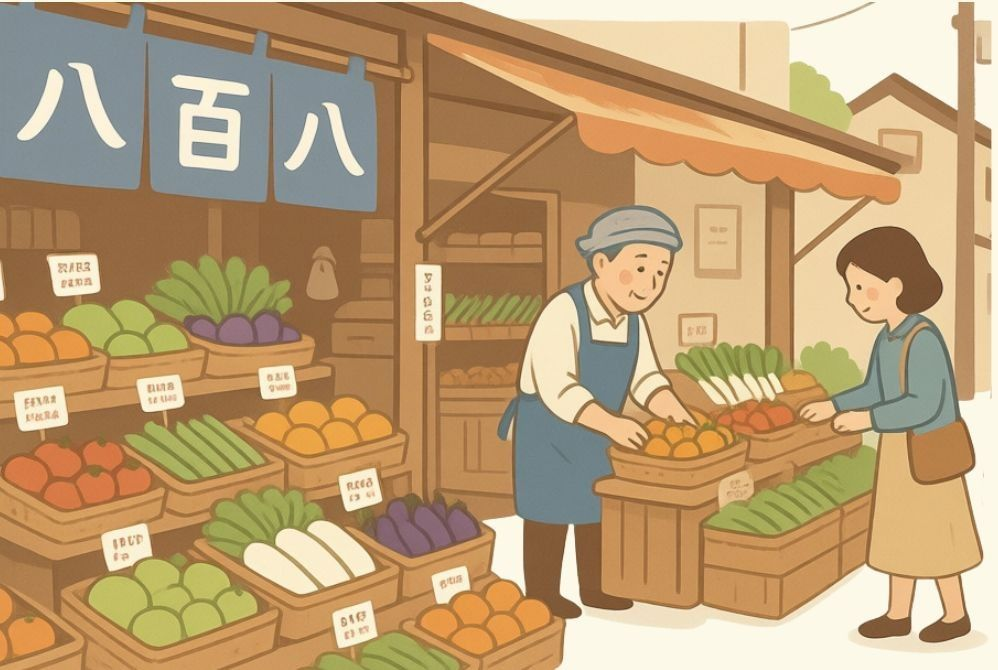
学校帰りの子どもたちでいつもにぎわう文房具店です。店限定のシールやノートも 取り扱っています。
| 所在地 | ピコぬ市記録町3丁目(郵便局の向かい側) |
|---|---|
| 電話 | ぬぬ-ぬかピコ-2345 |
| 営業時間 | 10:00〜18:00 |
| 定休日 | 木曜日 |
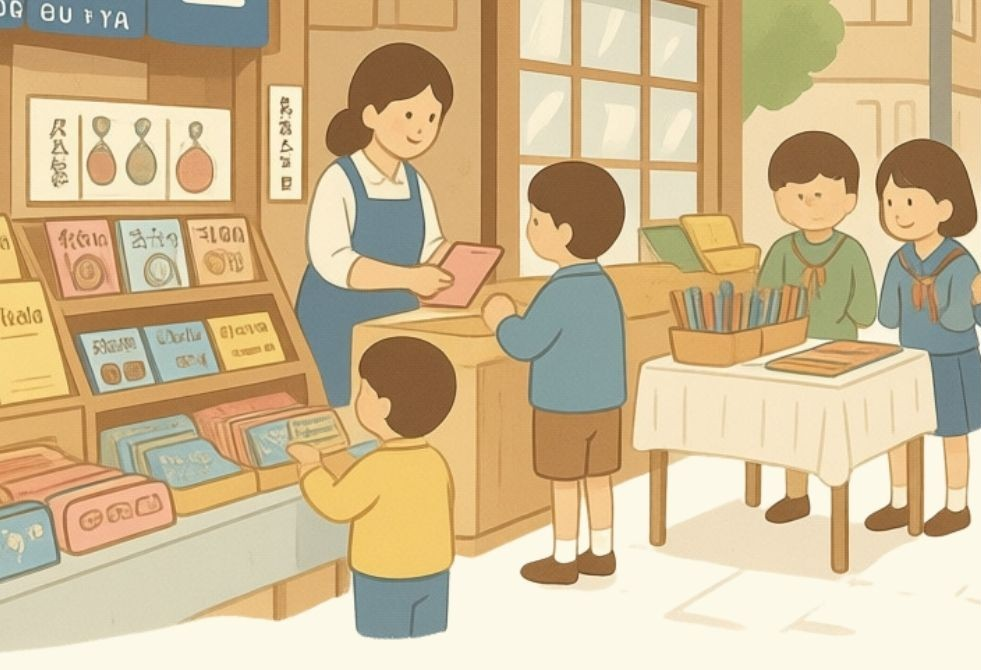
創業100年以上続く老舗です。名物は、ふっくらした生地にあんこがたっぷり詰まった 「焼きたてどら焼き」。売り切れることがあるため、午前中の来店がおすすめです。
| 所在地 | ピコぬ市記録町3丁目(神社の参道前) |
|---|---|
| 電話 | ぬぬ-ぬかピコ-1000 |
| 営業時間 | 9:00〜17:30 |
| 定休日 | 火曜日 |
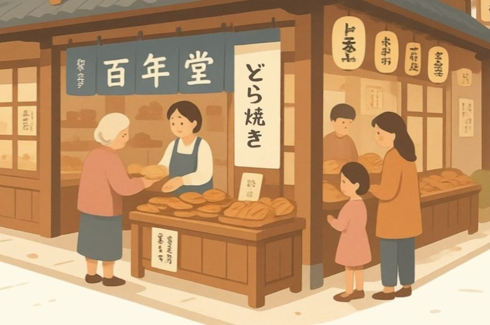
店主が全国から集めた、こだわりのハンドメイド雑貨や小物が並ぶお店です。 自分だけのお気に入りを見つける楽しみがあります。
| 所在地 | ピコぬ市記録町3丁目1-10 |
|---|---|
| 電話 | ぬぬ-ぬかピコ-4620 |
| 営業時間 | 10:30〜18:30 |
| 定休日 | 月曜日 |
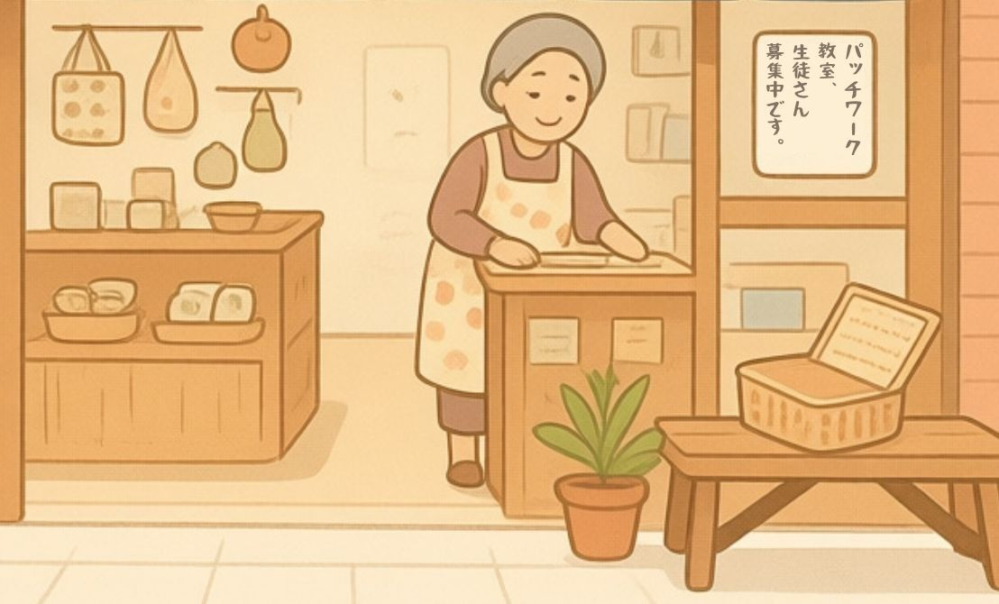
焼きたてパンの香ばしい匂いが商店街の通りまで漂ってきます。名物の 「ピコぬクリームパン」は、しっとりした生地にカスタードクリームがたっぷりです。
| 所在地 | ピコぬ市記録町3丁目(ひより雑貨店隣) |
|---|---|
| 電話 | ぬぬ-ぬかピコ-8810 |
| 営業時間 | 8:00〜18:00 |
| 定休日 | 月曜日・火曜日 |
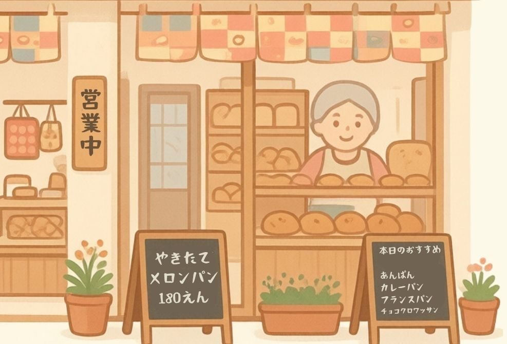
木造のレトロな建物と、入り口の赤い丸ポストが商店街の目印です。局長ほか職員が 手紙や荷物を毎日預かっています。
| 所在地 | ピコぬ市記録町3丁目(文房具店向かい側) |
|---|---|
| 電話 | ぬぬ-ぬかピコ-1111 |
| 営業時間 | 9:00〜17:30 |
| 定休日 | 土曜日・日曜日・祝日 |
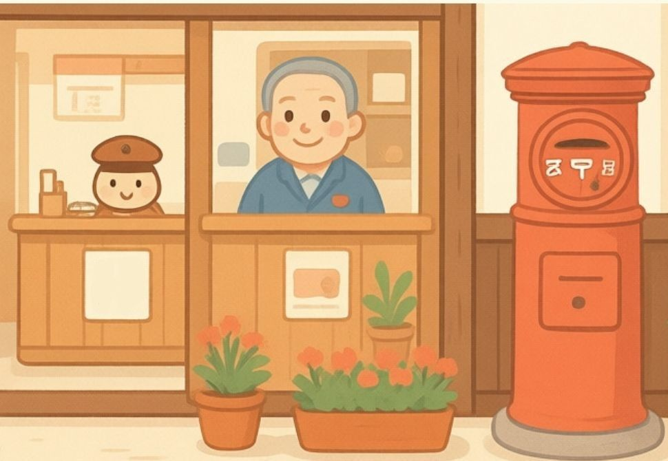
ガラス窓の奥に、懐かしいブリキのロボットや可愛いお人形が並ぶお店です。 昔ながらのロボットが今も置いてあります。
| 所在地 | ピコぬ市記録町3丁目(郵便局の並び) |
|---|---|
| 電話 | ぬぬ-ぬかピコ-0588 |
| 営業時間 | 10:00〜18:30 |
| 定休日 | 木曜日 |
いつもスパイスの良い香りが漂うカレー専門店です。じっくり煮込んだ牛すじと、 シャキシャキのピコぬネギを使った「牛すじネギカレー」が自慢のお店です。
| 所在地 | ピコぬ市記録町3丁目(郵便局の並び) |
|---|---|
| 電話 | ぬぬ-ぬかピコ-2258(ふーふーごはん) |
| 営業時間 | 10:00〜14:00(土日祝日は18:00まで) |
| 定休日 | 木曜日 |
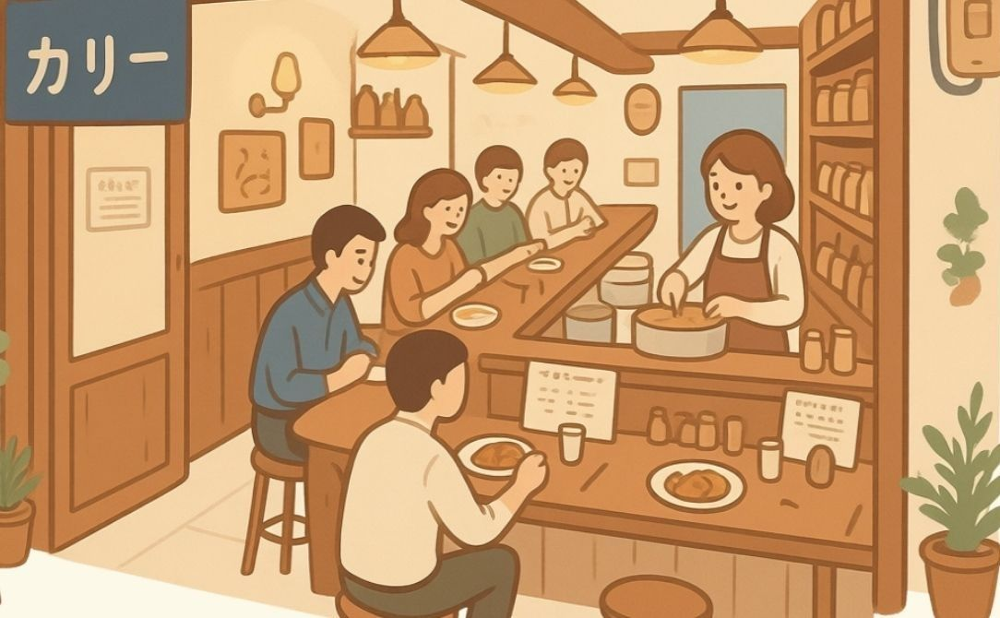
仕事帰りの市民がふらりと立ち寄る小さな音楽酒場。古いレコードとギターが並び、 夜には誰かの弾く音が聞こえてきます。J.NUKAが歌っていたという噂も。 演奏者・出演時間は日によって異なります。静かに飲みたい方も歓迎しております。
| 所在地 | ピコぬ市記録町3丁目(裏通り) |
|---|---|
| 電話 | ぬぬ-ぬかピコ-3030(さんじゅうえん) |
| 営業時間 | 17:00〜23:00 |
| 定休日 | 日曜日 |
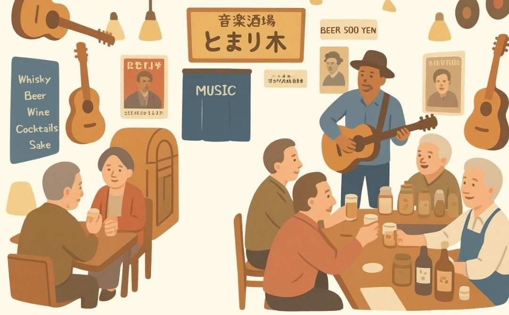
ピコぬ市商工会事務局
ピコぬ市記録町1丁目 商工会館2階
電話：ぬぬ-ぬかピコ-4105(よいとこ)
商店街に関するお問い合わせ、加盟店募集についてなど、お気軽にご連絡ください。